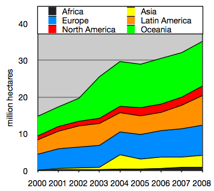

Methods
Organic farming methods combine scientific knowledge of ecology and some modern technology with traditional farming
practices based on naturally occurring biological processes. Organic farming methods are studied in the field of agroecology.
While conventional agriculture uses synthetic pesticides and water-soluble synthetically purified fertilizers, organic
farmers are restricted by regulations to using natural pesticides and fertilizers. An example of a natural pesticide is
pyrethrin, which is found naturally in the Chrysanthemum flower. The principal methods of organic farming include crop
rotation, green manures and compost, biological pest control, and mechanical cultivation. These measures use the natural
environment to enhance agricultural productivity: legumes are planted to fix nitrogen into the soil, natural insect predators
are encouraged, crops are rotated to confuse pests and renew soil, and natural materials such as potassium bicarbonate
and mulches are used to control disease and weeds. Genetically modified seeds and animals are excluded.
> Crop diversity
Organic farming encourages crop diversity by promoting polyculture (multiple crops in the same space). Planting a variety
of vegetable crops supports a wider range of beneficial insects, soil microorganisms, and other factors that add up to
overall farm health. Crop diversity helps the environment to thrive and protects species from going extinct.[46][47]
The science of Agroecology has revealed the benefits of polyculture, which is often employed in organic farming.
Agroecology is a scientific discipline that uses ecological theory to study, design, manage, and evaluate agricultural
systems that are productive and resource-conserving, and that are also culturally sensitive, socially just, and
economically viable.
Incorporating crop diversity into organic farming practices can have several benefits. For instance, it can help to
increase soil fertility by promoting the growth of beneficial soil microorganisms. It can also help to reduce pest and
disease pressure by creating a more diverse and resilient agroecosystem.[49] Furthermore, crop diversity can help to
improve the nutritional quality of food by providing a wider range of essential nutrients.
> Soil management
Organic farming relies more heavily on the natural breakdown of organic matter than the average conventional farm,
using techniques like green manure and composting, to replace nutrients taken from the soil by previous crops. This
biological process, driven by microorganisms such as mycorrhiza and earthworms, releases nutrients available to plants
throughout the growing season. Farmers use a variety of methods to improve soil fertility, including crop rotation,
cover cropping, reduced tillage, and application of compost. By reducing fuel-intensive tillage, less soil organic
matter is lost to the atmosphere. This has an added benefit of carbon sequestration, which reduces greenhouse gases
and helps reverse climate change. Reducing tillage may also improve soil structure and reduce the potential for soil
erosion.
Plants need a large number of nutrients in various quantities to flourish. Supplying enough nitrogen and particularly
synchronization, so that plants get enough nitrogen at the time when they need it most, is a challenge for organic
farmers.[51] Crop rotation and green manure ("cover crops") help to provide nitrogen through legumes (more precisely,
the family Fabaceae), which fix nitrogen from the atmosphere through symbiosis with rhizobial bacteria. Intercropping,
which is sometimes used for insect and disease control, can also increase soil nutrients, but the competition between
the legume and the crop can be problematic and wider spacing between crop rows is required. Crop residues can be
ploughed back into the soil, and different plants leave different amounts of nitrogen, potentially aiding
synchronization.[51] Organic farmers also use animal manure, certain processed fertilizers such as seed meal and
various mineral powders such as rock phosphate and green sand, a naturally occurring form of potash that provides
potassium. In some cases pH may need to be amended. Natural pH amendments include lime and sulfur, but in the U.S.
some compounds such as iron sulfate, aluminum sulfate, magnesium sulfate, and soluble boron products are allowed in
organic farming.
> Weed management
Organic weed management promotes weed suppression, rather than weed elimination, by enhancing crop competition and
phytotoxic effects on weeds.[53] Organic farmers integrate cultural, biological, mechanical, physical and chemical
tactics to manage weeds without synthetic herbicides.
Organic standards require rotation of annual crops,[54] meaning that a single crop cannot be grown in the same
location without a different, intervening crop. Organic crop rotations frequently include weed-suppressive cover
crops and crops with dissimilar life cycles to discourage weeds associated with a particular crop.[53] Research
is ongoing to develop organic methods to promote the growth of natural microorganisms that suppress the growth or
germination of common weeds.
Other cultural practices used to enhance crop competitiveness and reduce weed pressure include selection of
competitive crop varieties, high-density planting, tight row spacing, and late planting into warm soil to
encourage rapid crop germination.
Mechanical and physical weed control practices used on organic farms can be broadly grouped as:
Tillage - Turning the soil between crops to incorporate crop residues and soil amendments; remove existing weed growth and prepare a seedbed for planting; turning soil after seeding to kill weeds, including cultivation of row crops.
Mowing and cutting - Removing top growth of weeds.
Flame weeding and thermal weeding - Using heat to kill weeds.
Mulching - Blocking weed emergence with organic materials, plastic films, or landscape fabric.
> Controlling other organismst
Organisms aside from weeds that cause problems on farms include arthropods (e.g., insects, mites),
nematodes, fungi and bacteria. Practices include, but are not limited to:
Examples of predatory beneficial insects include minute pirate bugs, big-eyed bugs, and to a lesser extent
ladybugs (which tend to fly away), all of which eat a wide range of pests. Lacewings are also effective, but
tend to fly away. Praying mantis tend to move more slowly and eat less heavily. Parasitoid wasps tend to be
effective for their selected prey, but like all small insects can be less effective outdoors because the
wind controls their movement. Predatory mites are effective for controlling other mites.
Naturally derived insecticides allowed for use on organic farms include Bacillus thuringiensis (a bacterial toxin),
pyrethrum (a chrysanthemum extract), spinosad (a bacterial metabolite), neem (a tree extract) and rotenone (a legume root
extract). Fewer than 10% of organic farmers use these pesticides regularly; a 2003 survey found that only 5.3% of
vegetable growers in California use rotenone while 1.7% use pyrethrum.These pesticides are not always more
safe or environmentally friendly than synthetic pesticides and can cause harm.The main criterion for organic pesticides
is that they are naturally derived, and some naturally derived substances have been controversial. Controversial natural
pesticides include rotenone, copper, nicotine sulfate, and pyrethrums[61][62] Rotenone and pyrethrum are particularly
controversial because they work by attacking the nervous system, like most conventional insecticides. Rotenone is
extremely toxic to fish[63] and can induce symptoms resembling Parkinson's disease in mammals.[64][65] Although pyrethrum
(natural pyrethrins) is more effective against insects when used with piperonyl butoxide (which retards degradation of
the pyrethrins),[66] organic standards generally do not permit use of the latter substance.
> Livestock
Raising livestock and poultry, for meat, dairy and eggs, is another traditional farming activity that complements
growing. Organic farms attempt to provide animals with natural living conditions and feed. Organic certification
verifies that livestock are raised according to the USDA organic regulations throughout their lives.[79] These
regulations include the requirement that all animal feed must be certified organic.
Organic livestock may be, and must be, treated with medicine when they are sick, but drugs cannot be used to
promote growth, their feed must be organic, and they must be pastured.
Also, horses and cattle were once a basic farm feature that provided labour, for hauling and plowing, fertility, through
recycling of manure, and fuel, in the form of food for farmers and other animals. While today, small growing operations
often do not include livestock, domesticated animals are a desirable part of the organic farming equation, especially for
true sustainability, the ability of a farm to function as a self-renewing unit.
Growth

In 2001, the global market value of certified organic products was estimated at US$20 billion. By 2002,
this was US$23 billion and by 2015 more than US$43 billion.[105] By 2014, retail sales of organic products
reached US$80 billion worldwide. North America and Europe accounted for more than 90% of all organic
product sales.In 2018 Australia accounted for 54% of the world's certified organic land with the country
recording more than 35,000,000 verified organic hectares (86,000,000 acres).
Organic agricultural land increased almost fourfold in 15 years, from 11 million hectares (27 million acres) in 1999
to 43.7 million hectares (108 million acres) in 2014. Between 2013 and 2014, organic agricultural land grew by
500 thousand hectares (1,200,000 acres) worldwide, increasing in every region except Latin America. During this
time period, Europe's organic farmland increased 260 thousand hectares (640,000 acres) to 11.6 million hectares
(29 million acres) (+2.3%), Asia's increased 159 thousand hectares (390,000 acres) to 3.6 million hectares
(8.9 million acres) (+4.7%), Africa's increased 54 thousand hectares (130,000 acres) to 1.3 million hectares
(3.2 million acres) total (+4.5%), and North America's increased 35 thousand hectares (86,000 acres) to 3.1 million
hectares (7.7 million acres) total (+1.1%).[106] As of 2014, the country with the most organic land was Australia
(17.2 million hectares (43 million acres)), followed by Argentina (3.1 million hectares (7.7 million acres)), and
the United States (2.2 million hectares (5.4 million acres)).[106] Australia's organic land area has increased at a
rate of 16.5% per annum for the past eighteen years.
In 2013, the number of organic producers grew by almost 270,000, or more than 13%.[106] By 2014, there were a
reported 2.3 million organic producers in the world.[106] Most of the total global increase took place in the
Philippines, Peru, China, and Thailand.[106] Overall, the majority of all organic producers are in India
(650,000 in 2013), Uganda (190,552 in 2014), Mexico (169,703 in 2013) and the Philippines (165,974 in 2014).
In 2016, organic farming produced over 1 million metric tons (980,000 long tons; 1,100,000 short tons) of bananas,
over 800 thousand metric tons (790,000 long tons; 880,000 short tons) of soybean, and just under 500 thousand metric
tons (490,000 long tons; 550,000 short tons) of coffee.